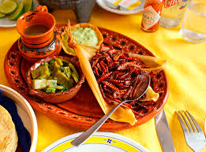
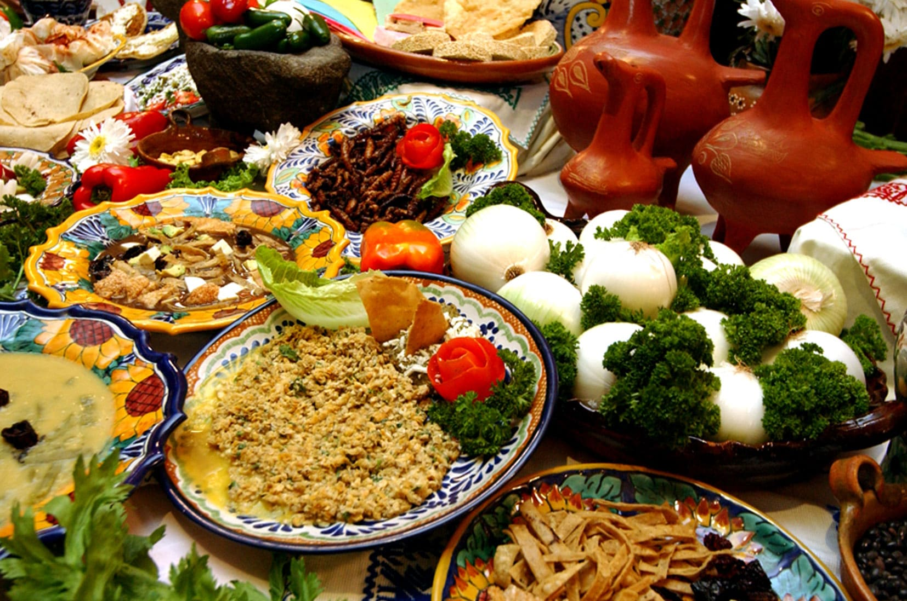
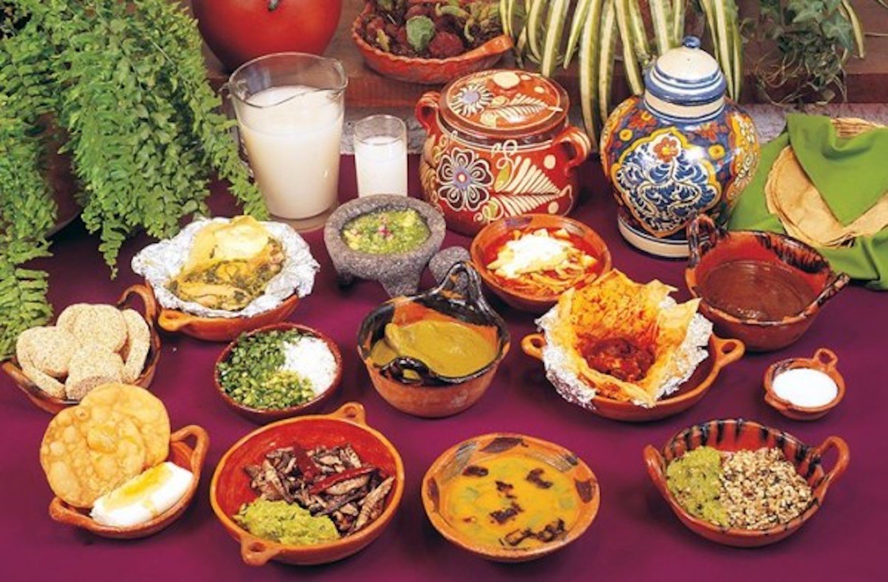

La gastronomía de Zacatecas es amplia y variada, es una cocina rica en sabores
y aromas, se basa principalmente en productos como las carnes, el maíz, el chile,
el jitomate, frutas y los frijoles, birria y tacos de canasta, cómo dijo Delia.
Entre los platillos principales destaca el asado de bodas, el cual está hecho a
base de carne de puerco con una salsa de chiles y chocolate, y que, como su nombre
lo dice, tradicionalmente se servía durante las bodas. Otros de los platillos
principales de Zacatecas son la birria de carnero, el popular menudo,
las enchiladas, las gorditas rellenas de guisados y la carne adobada.


